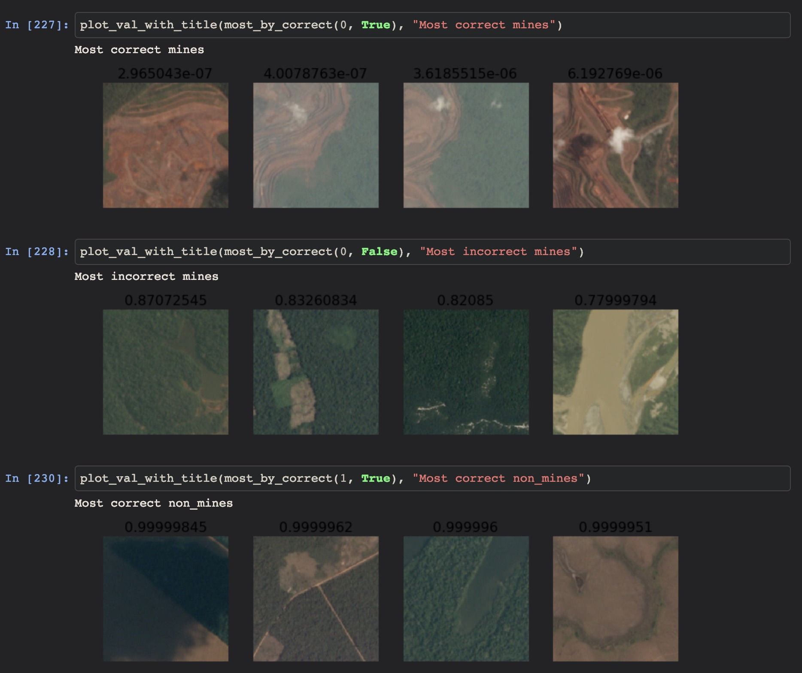
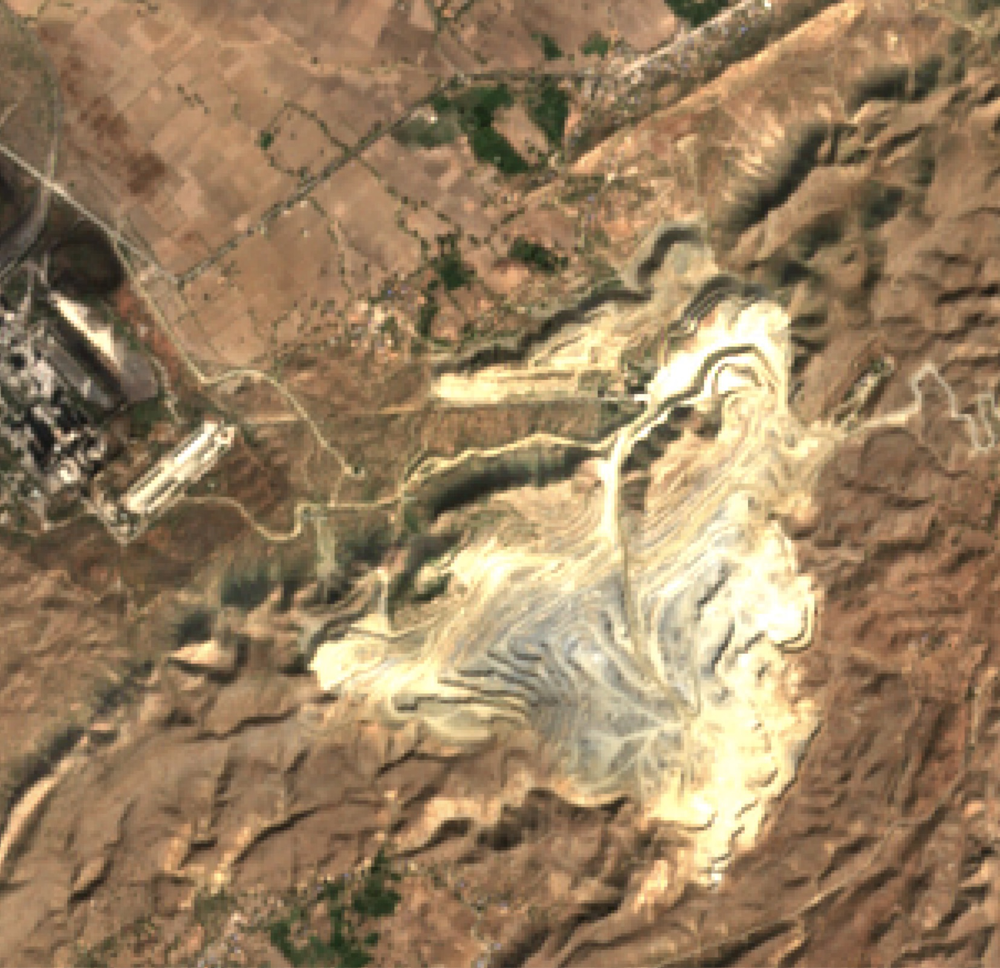
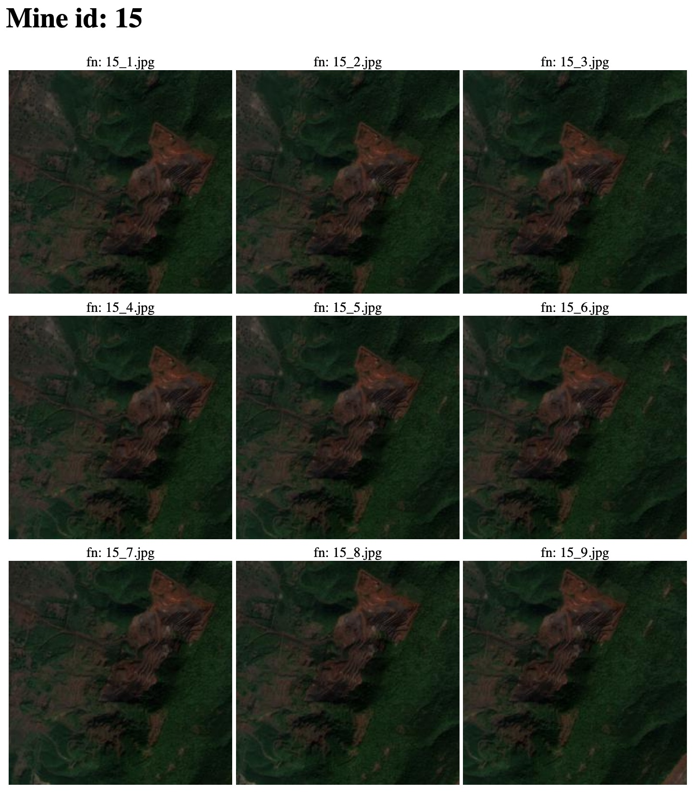

Mines from space
The Data Incubator
By Tobias Lunt
Who cares about mines?

Initial work
- Transferred Resnet to classify mines specifically
- Used > 30GB of kaggle imagery
- Promising early results:
Decent initial success
Since then
- Scraped an additional 60GB of Sentinel satellite imagery - best data available to the public
- Created image chips of known mines in India
- Approximately 7200 new mine images, more than doubling the training set
- Automated all spatial and image processing
Sentinel-2 image example (India)
Automated html synthesis for visual review of new chips
Next steps
- Downloading and processing still underway, will finish in a day or two
- Finish setting up environment on Google Cloud
- Scrape and create chips for all of India (test set)
- Begin training!